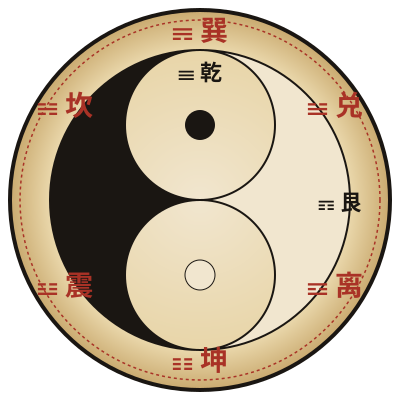

默 念
净手焚香，心诚意正；
静思所问之事，
默念毕，请点击下方掷出铜钱。
字
背
字
背
字
背
第 1 爻 / 共 6 爻
三枚铜钱，正在候命
本 卦
—
→
变 卦
—
解 卦
尚未起卦。请点击「掷铜钱」开始。
近 期 问 卦
- 尚无记录
六 十 四 卦
点击卦象查看卦辞、爻辞与象传
易 之 源

太 极 生 两 仪
《易·系辞上》：「易有太极，是生两仪，两仪生四象，四象生八卦。」
无极而太极。太极动而生阳，静而生阴。阴阳交合，化生万物。
八卦者，乾☰兑☱离☲震☳巽☴坎☵艮☶，象征天泽火雷风水山八种自然之力。
六 爻 起 卦 法
取三枚铜钱，合于掌中，默念所问，摇掷落下：
- 三背→老阴 6（动爻）
- 二背一字→少阳 7
- 一背二字→少阴 8
- 三字→老阳 9（动爻）
自下而上共掷六次，累积成卦。老阴老阳为动爻，阴变阳、阳变阴，得出"之卦"（变卦）。
象 数 与 义 理
《易经》以卦象为骨，以数行为脉，以辞为肉。三者合一，方见其神。
其理广大，无所不包：仰以观于天文，俯以察于地理，近取诸身，远取诸物。
设 置
主 题
宣纸（米白）· 玄夜（墨黑）
铜 钱 落 盘 声
起卦时是否发出铜钱落地之声
清 除 历 史
清除本机存储的问卦记录
关 于
周易 · 一念问天 v1.0
水墨国风 · 纯静态网页 · GitHub Pages 部署